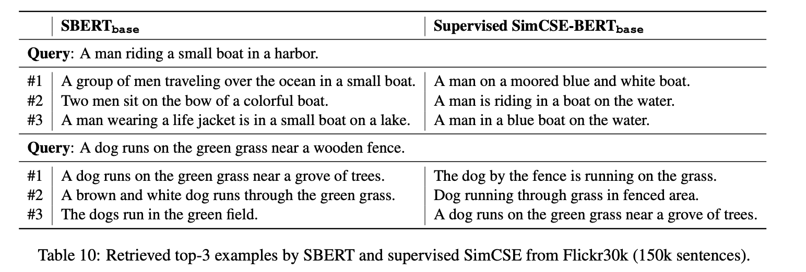
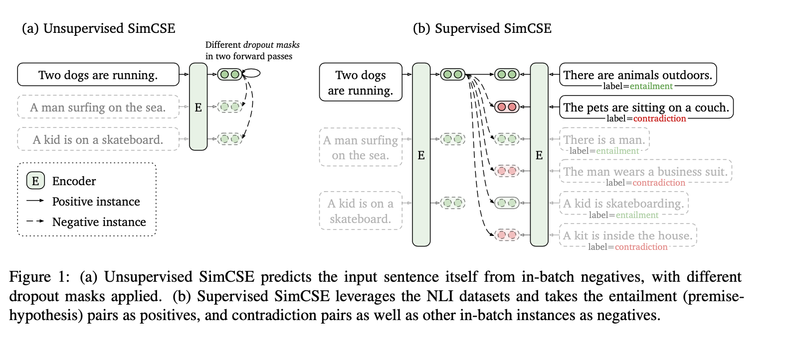
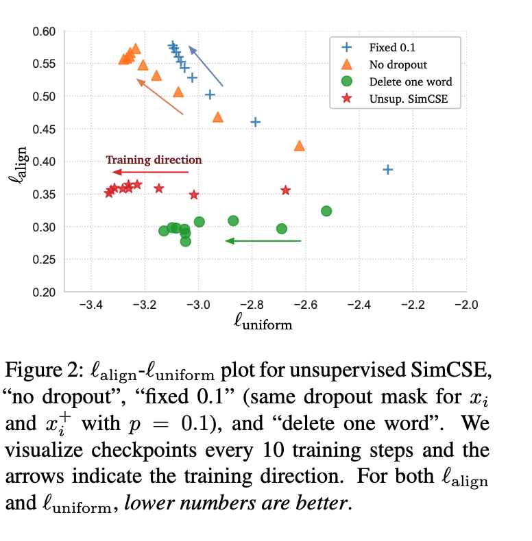
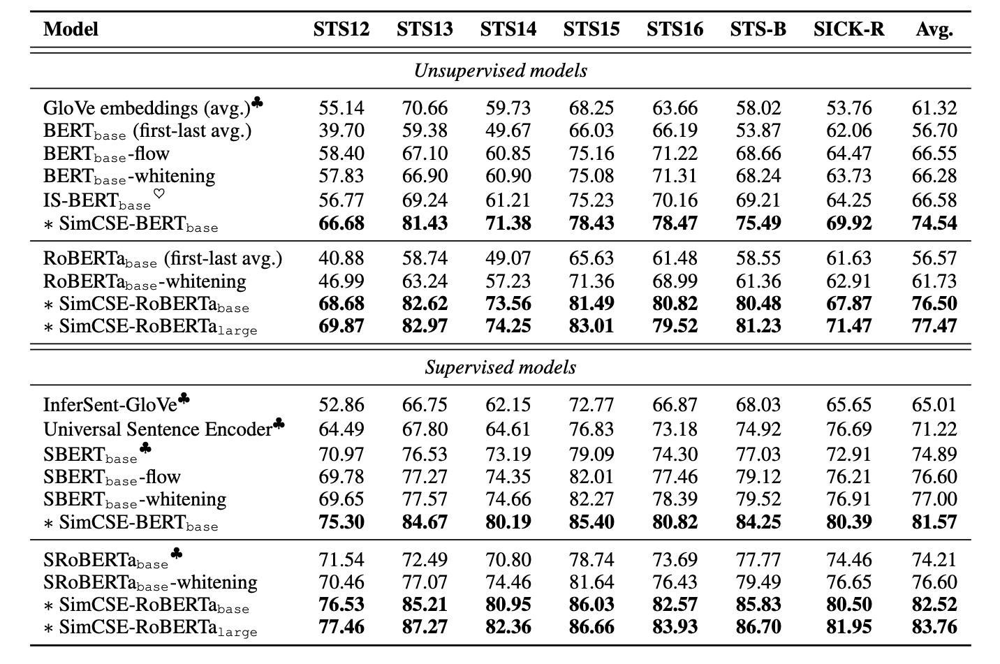
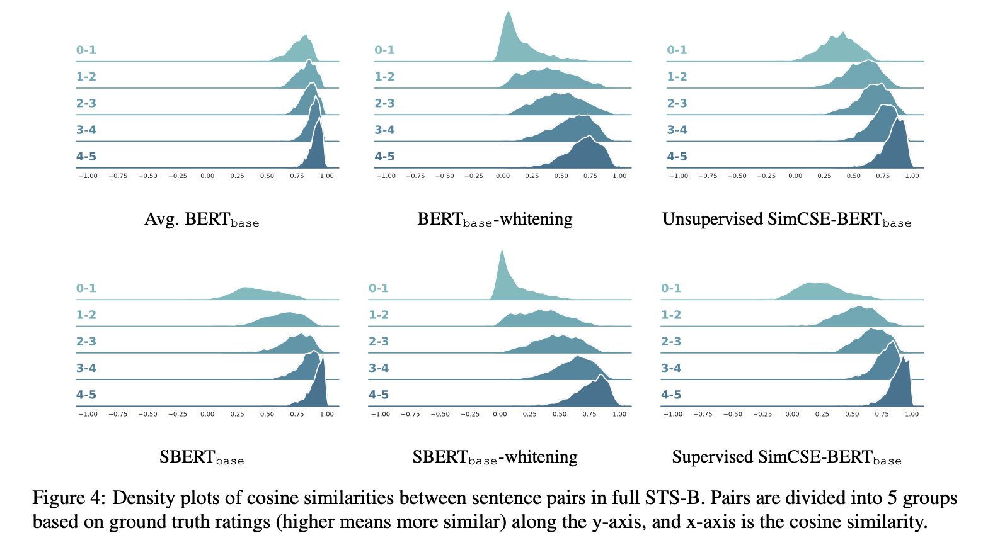

1. Read the title and make an opinion of what’s in the paper (e.g., the area, the task)
SimCSE: Simple Contrastive Learning of Sentence Embeddings
Nice, descriptive title. This points me into the direction of contrastive learning with a probably simple loss function with the embeddings of full sentences. How will the sentences be formed from multiple tokens?
2. Read the abstract well and form a hypothesis of
- What’s new in the paper?
- Do you have a clear overview about what the paper is all about?
Year: 2021
Note: I do have to say I read papers differently based on who I perceive to have written them. It exposes I have bias in my judgment of papers which I should try to eliminate and focus on content and reason.
This paper presents SimCSE, a simple contrastive learning framework that greatly advances the state-of-the-art sentence embeddings.
I like to see systems that push the boundaries for new areas, and sentence embeddings are very valuable to have.
We first describe an unsupervised approach, which takes an input sentence and predicts itself in a contrastive objective, with only standard dropout used as noise.
This is surprising to me. It seems the only thing that is done is you augment your network by training with dropout and force the representations to become more robust. I’m still not clear exactly how its being train and what the output is at each step.
We then incorporate annotated pairs from NLI (natural language inference) datasets into contrastive learning by using “entailment” pairs as positives and “contradiction” pairs as hard negatives.
This is standard following the negative sampling approach of word2vec.
To give a concrete example of the task, below they show retrieved examples, from their system and a competitor, that are looking to find sentences that semantically match the query sentence:

3. Look at the images and extract a set of “questions” about what is not clear about their method from the images. Now your job is to answer these questions by reading the paper.

This diagram really helped me understand on the left side how the self-supervised approach truly does predict itself, however, just with two different dropout passes. This is a cool extension to the dropout method.

This figure is not entirely clear to me, but it seems like a result of experiments they have run that demonstrates something about the loss landscape as they record it during training steps.
4. Read the method aiming to answer your “questions” about the paper. Focus on understanding only the things relevant for the story (i.e., to understand the contribution).
In other words, we pass the same input sentence to the pre-trained encoder twice and obtain two embeddings as “positive pairs”, by applying independently sampled dropout masks. Although it may appear strikingly simple, we find that this approach largely outperforms training objectives such as predicting next sentences
They even note that this in itself matches previous supervised approaches.
As we will see in §3, using standard dropout on intermediate representations outperforms these discrete operators.
This is an extremely simple method, and it appears to do well. The loss function simply looks at the similarity of and . They use cosine similarity as their similarity function.
I’d like to point out that they are not augmenting the input sentence, but the intermediate representation. This uses the standard dropout in the attention layers that were already in the Transformer block.
5. Read the experiments to convince you that the show results are caused by their claim. Be aware that the experiments highlighted are the best scenarios and are fully hyper-parameter tuned.
They do show good performance on these sentence embedding tasks.

I had to do some research to understand what these STS tasks were. They are a human annotated list of sentences graded on a 0-5 scale, 0 being different topics, and 5 being completely equivalent.
These plots I found to be quite beautiful, as they show the density plots of the cosine similarities for each level in the STS task.

6. Make sure you answered all your questions. Did the authors convince you that their story has the effect that they claim?
Its a very interesting and good results they get with just using dropout on the representations. It would be an interesting study to see how this technique may apply to other domains.